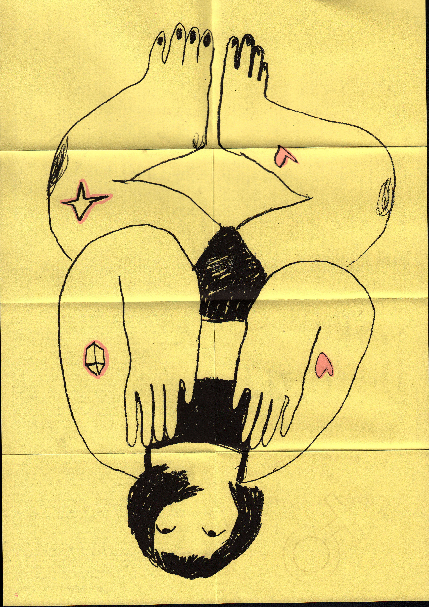
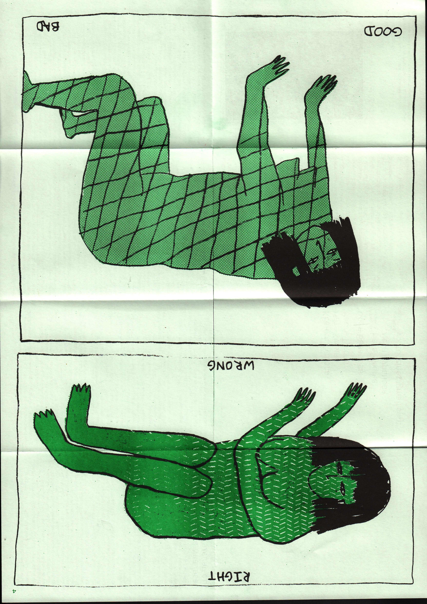
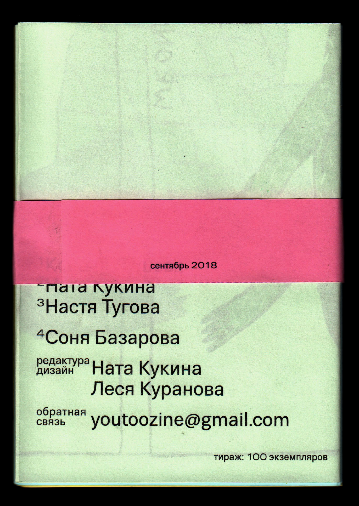

you too zine







With this brief we decided to make the project we’ve been thinking of for a while and make it a live project with other people involved in it. Ты тоже is a feminist publication directed towards Russian public. We wanted to create a safe space for people to share their experiences as women and have a physical object as a manifestation of their shared stories. A publication consists of three smaller booklets with three stories and at least one illustration in each. All of the stories are original and were written especially for the zine. The stories, essays and visual material is divided into three main topics: sex and relationships, body and boundaries and fashion and standarts. Each zine has two stamps on it, which collectively form a Mirror Of Venus sign. It adds to our personal and manual approach to the topic. For the studio portrait we’ve looked at photos of women living and working in communal houses together. We’ve recorded ourselves working on the publication in our studio and screenshoted one of the moments.